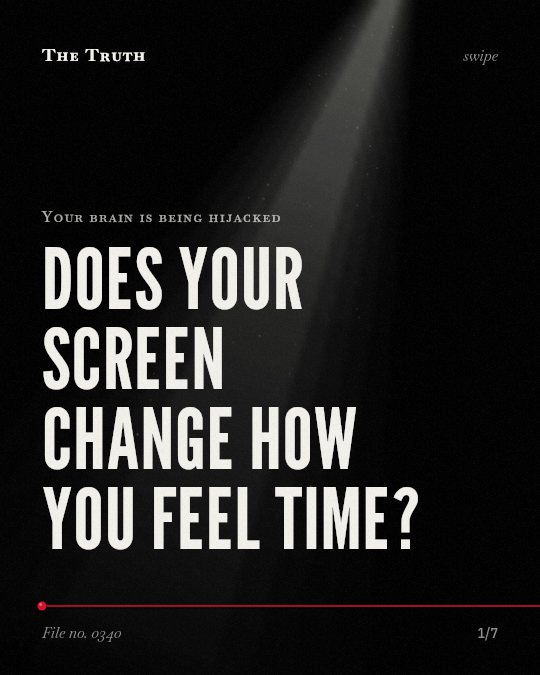
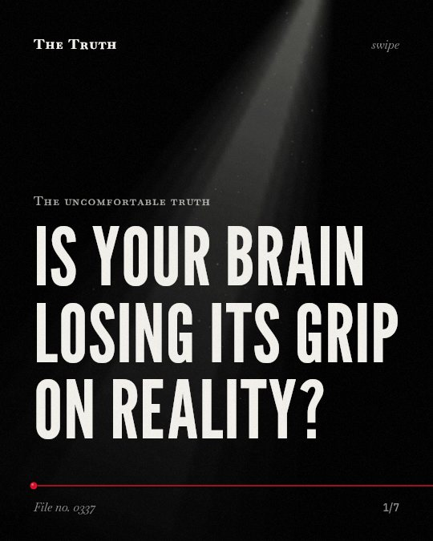
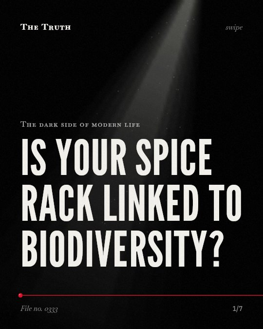

Your brain is being hijacked
where does the scroll end?
Social media addiction is formalized as entrapment in a design built through intentional variable-ratio reinforcement.
Supported. 6 checked claims from 3 studies.
Read the fileLatest files
 Does your interaction actually stop the hate?
Does your interaction actually stop the hate? Is your kindness a biological defense?
Is your kindness a biological defense? Is your home's warmth costing you your health?
Is your home's warmth costing you your health?
Does your screen change how you feel time? Why does choosing feel so heavy?
Why does choosing feel so heavy? Why is it so hard to choose your future over your present?
Why is it so hard to choose your future over your present?
Is your brain losing its grip on reality? Can a machine know how you feel?
Can a machine know how you feel? Does every noise affect a child's brain?
Does every noise affect a child's brain? Does being nice make you less happy?
Does being nice make you less happy?
Is your spice rack linked to biodiversity? Are you actually who you think you are?
Are you actually who you think you are?By subject
The Truth is a research desk, not an opinion page. A file is only published when its claims can be tied, word for word, to a published study. When the evidence is mixed, the file says so. When it cannot be proven, it is dropped.